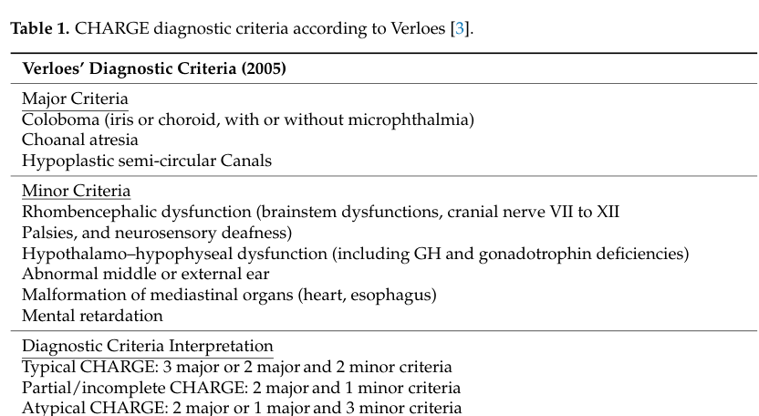

CHARGE syndrome is an autosomal dominant multiple-anomaly disorder caused in the large majority of cases by heterozygous loss-of-function variants in CHD7, which encodes an ATP-dependent chromatin-remodeling enzyme. The acronym CHARGE denotes Coloboma, Heart defects, Atresia of the choanae, Retardation of growth and development, Genital anomalies, and Ear anomalies, but following discovery of the molecular cause the phenotypic spectrum has expanded to include semicircular canal hypoplasia with vestibular dysfunction, cranial nerve anomalies (notably facial nerve palsy and olfactory/auditory deficits), cleft lip and/or palate, tracheoesophageal anomalies, hypothyroidism, brain anomalies, seizures, renal anomalies, and hypogonadotropic hypogonadism. CHD7 haploinsufficiency disrupts ATP-dependent chromatin remodeling required for the transcriptional programs of multipotent neural crest cells and cranial/otic placodes during early embryogenesis, producing the characteristic multisystem pattern of malformations.
Ask a research question about CHARGE syndrome. OpenScientist will conduct autonomous deep research using the Disorder Mechanisms Knowledge Base and PubMed literature (typically 10-30 minutes).
Do not include personal health information in your question. Questions and results are cached in your browser's local storage.
name: CHARGE syndrome
creation_date: '2026-06-03T00:00:00Z'
category: Mendelian
description: >-
CHARGE syndrome is an autosomal dominant multiple-anomaly disorder caused in
the large majority of cases by heterozygous loss-of-function variants in CHD7,
which encodes an ATP-dependent chromatin-remodeling enzyme. The acronym CHARGE
denotes Coloboma, Heart defects, Atresia of the choanae, Retardation of growth
and development, Genital anomalies, and Ear anomalies, but following discovery
of the molecular cause the phenotypic spectrum has expanded to include
semicircular canal hypoplasia with vestibular dysfunction, cranial nerve
anomalies (notably facial nerve palsy and olfactory/auditory deficits), cleft
lip and/or palate, tracheoesophageal anomalies, hypothyroidism, brain
anomalies, seizures, renal anomalies, and hypogonadotropic hypogonadism. CHD7
haploinsufficiency disrupts ATP-dependent chromatin remodeling required for the
transcriptional programs of multipotent neural crest cells and cranial/otic
placodes during early embryogenesis, producing the characteristic multisystem
pattern of malformations.
disease_term:
preferred_term: CHARGE syndrome
term:
id: MONDO:0008965
label: CHARGE syndrome
mappings:
mondo_mappings:
- term:
id: MONDO:0008965
label: CHARGE syndrome
mapping_predicate: skos:exactMatch
mapping_source: MONDO
parents:
- genetic syndrome
- hereditary disease
synonyms:
- CHD7 disorder
- coloboma, heart defect, atresia choanae, retarded growth and development, genital
abnormality, and ear abnormality syndrome
references:
- reference: PMID:20301296
title: "CHD7 Disorder."
tags:
- GeneReviews
prevalence:
- population: General population (birth prevalence)
notes: >-
Estimated birth prevalence of CHARGE syndrome is approximately 1 in
8,500 to 1 in 17,000 live births across cohort and review estimates.
evidence:
- reference: PMID:37675914
reference_title: "CHARGE syndrome and congenital heart diseases: systematic review of literature."
supports: SUPPORT
evidence_source: HUMAN_CLINICAL
snippet: >-
CHARGE syndrome (CS) is a rare genetic disease that affects many areas of the body.
explanation: >-
Confirms CHARGE syndrome is a rare multisystem genetic disorder.
progression:
- phase: Early life
notes: >-
Major early-life morbidity and mortality are driven by complex congenital
heart defects and by airway/feeding problems; aspiration related to feeding
difficulties is a leading cause of non-cardiovascular death.
evidence:
- reference: PMID:37675914
reference_title: "CHARGE syndrome and congenital heart diseases: systematic review of literature."
supports: SUPPORT
evidence_source: HUMAN_CLINICAL
snippet: >-
CHDs and feeding disorders associated with CS may have a substantial impact on prognosis.
explanation: >-
Systematic review concluding that congenital heart defects and feeding
disorders substantially affect prognosis in CHARGE syndrome.
inheritance:
- name: Autosomal dominant inheritance
inheritance_term:
preferred_term: Autosomal dominant inheritance
term:
id: HP:0000006
label: Autosomal dominant inheritance
de_novo_rate: "90"
description: >-
CHARGE syndrome (CHD7 disorder) is an autosomal dominant disorder typically
caused by a de novo pathogenic variant. In rare instances an individual
inherits a pathogenic variant from a heterozygous parent, and germline
mosaicism has been documented, giving an empiric sibling recurrence risk of
approximately 1%-2% when the proband's variant is not detected in either
parent.
evidence:
- reference: PMID:20301296
reference_title: "CHD7 Disorder."
supports: SUPPORT
evidence_source: HUMAN_CLINICAL
snippet: >-
CHD7 disorder is an autosomal dominant disorder typically caused by a de novo pathogenic variant.
explanation: >-
GeneReviews directly states the autosomal dominant inheritance pattern and
that most cases arise de novo.
- reference: PMID:16155193
reference_title: "CHARGE syndrome: the phenotypic spectrum of mutations in the CHD7 gene."
supports: SUPPORT
evidence_source: HUMAN_CLINICAL
snippet: >-
Somatic mosaicism was detected in the unaffected mother of a sib pair, supporting the existence of germline mosaicism.
explanation: >-
Documents germline mosaicism in CHARGE syndrome, which underlies the
empiric recurrence risk for siblings of a proband with apparently de novo
variants.
pathophysiology:
- name: CHD7 haploinsufficiency and impaired ATP-dependent chromatin remodeling
description: >-
CHD7 encodes a chromodomain helicase DNA-binding protein that functions as an
ATP-dependent chromatin-remodeling enzyme. Heterozygous loss-of-function
variants reduce CHD7 dosage (haploinsufficiency), impairing the
chromatin-remodeling activity needed to fine-tune transcriptional programs
during development. Most pathogenic variants are unique nonsense or frameshift
variants scattered throughout the gene, consistent with a loss-of-function
mechanism.
biological_processes:
- preferred_term: ATP-dependent chromatin remodeling
term:
id: GO:0006338
label: chromatin remodeling
modifier: DECREASED
downstream:
- target: Disrupted neural crest cell development
description: >-
Loss of CHD7 chromatin-remodeling activity disrupts the transcriptional
programs of multipotent neural crest cells.
- target: Inappropriate p53 activation
description: >-
CHD7 normally binds the p53 promoter to repress p53; haploinsufficiency
releases this repression and causes inappropriate p53 activation.
- target: Impaired cranial and otic placode-derived development
description: >-
Reduced CHD7 dosage impairs the chromatin remodeling required for
cranial/otic placode and inner ear development.
evidence:
- reference: PMID:15300250
reference_title: "Mutations in a new member of the chromodomain gene family cause CHARGE syndrome."
supports: SUPPORT
evidence_source: HUMAN_CLINICAL
snippet: >-
Sequence analysis of genes located in this region detected mutations in the gene CHD7 in 10 of 17 individuals with CHARGE syndrome without microdeletions, accounting for the disease in most affected individuals.
explanation: >-
Original identification of CHD7 (a chromodomain gene family member) as the
major cause of CHARGE syndrome.
- reference: PMID:33127760
reference_title: "CHD7 regulates cardiovascular development through ATP-dependent and -independent activities."
supports: SUPPORT
evidence_source: MODEL_ORGANISM
snippet: >-
CHD7 encodes an ATP-dependent chromatin remodeling factor.
explanation: >-
Confirms CHD7 functions as an ATP-dependent chromatin remodeling enzyme,
the molecular activity reduced by haploinsufficiency.
- name: Disrupted neural crest cell development
description: >-
CHD7 acts cell-autonomously in multipotent neural crest cells to fine-tune
expression of gene networks critical for their development and migration.
Conditional deletion of Chd7 in neural crest cells in mice causes severe
conotruncal heart defects and perinatal lethality, recapitulating the
cardiac neural crest contribution to CHARGE-type malformations. Disrupted
neural crest development provides a unifying explanation for the multisystem
craniofacial, cardiac, and other anomalies of CHARGE syndrome.
cell_types:
- preferred_term: Migratory neural crest cell
term:
id: CL:0000333
label: migratory neural crest cell
biological_processes:
- preferred_term: Neural crest cell development
term:
id: GO:0014032
label: neural crest cell development
modifier: ABNORMAL
- preferred_term: Neural crest cell migration
term:
id: GO:0001755
label: neural crest cell migration
modifier: ABNORMAL
evidence:
- reference: PMID:33127760
reference_title: "CHD7 regulates cardiovascular development through ATP-dependent and -independent activities."
supports: SUPPORT
evidence_source: MODEL_ORGANISM
snippet: >-
deletion of Chd7 in neural crest cells (NCCs) causes severe conotruncal defects and perinatal lethality, thus providing mouse genetic evidence demonstrating that CHD7 cell-autonomously regulates cardiac NCC development
explanation: >-
Mouse genetic evidence that CHD7 acts cell-autonomously in neural crest
cells, linking CHD7 loss to neural crest-derived (conotruncal) defects.
- reference: PMID:29179815
reference_title: "CHARGE syndrome modeling using patient-iPSCs reveals defective migration of neural crest cells harboring CHD7 mutations."
supports: SUPPORT
evidence_source: IN_VITRO
snippet: >-
CHARGE iPSC-NCCs showed defective delamination, migration and motility in vitro, and their transplantation in ovo revealed overall defective migratory activity in the chick embryo.
explanation: >-
Patient iPSC-derived neural crest cells directly demonstrate the defective
migration predicted by the neurocristopathy hypothesis for CHARGE syndrome.
- reference: PMID:36587182
reference_title: "Chromatin remodeler CHD7 targets active enhancer region to regulate cell type-specific gene expression in human neural crest cells."
supports: SUPPORT
evidence_source: IN_VITRO
snippet: >-
CHD7 was strongly associated with active enhancer regions, permitting the expression of hNCC-specific genes to sustain the function of hNCCs.
explanation: >-
Provides the molecular basis for CHD7's role in neural crest cells: it acts
at active enhancers to drive neural crest-specific gene expression.
- name: Inappropriate p53 activation
description: >-
CHD7 binds the p53 promoter and negatively regulates p53 expression. Loss of
CHD7 in neural crest cells (and in samples from patients with CHARGE syndrome)
results in inappropriate p53 activation, and p53 heterozygosity partially
rescues Chd7-null mouse phenotypes, indicating that excessive p53 activity
contributes to CHARGE-type developmental defects downstream of CHD7 loss.
biological_processes:
- preferred_term: Signal transduction by p53 class mediator
term:
id: GO:0072331
label: signal transduction by p53 class mediator
modifier: INCREASED
downstream:
- target: Disrupted neural crest cell development
description: >-
Inappropriate p53 activation contributes to the neural crest-related
phenotypes downstream of CHD7 loss; p53 heterozygosity partially rescues
Chd7-null phenotypes.
evidence:
- reference: PMID:25119037
reference_title: "Inappropriate p53 activation during development induces features of CHARGE syndrome."
supports: SUPPORT
evidence_source: MODEL_ORGANISM
snippet: >-
we found that CHD7 can bind to the p53 promoter, thereby negatively regulating p53 expression, and that CHD7 loss in mouse neural crest cells or samples from patients with CHARGE syndrome results in p53 activation
explanation: >-
Establishes that CHD7 normally represses p53 and that CHD7 loss causes
inappropriate p53 activation, a contributing mechanism in CHARGE syndrome.
- reference: PMID:25119037
reference_title: "Inappropriate p53 activation during development induces features of CHARGE syndrome."
supports: SUPPORT
evidence_source: MODEL_ORGANISM
snippet: >-
we found that p53 heterozygosity partially rescued the phenotypes in Chd7-null mouse embryos, demonstrating that p53 contributes to the phenotypes that result from CHD7 loss
explanation: >-
Genetic rescue experiment demonstrating p53 hyperactivation is causally
downstream of CHD7 loss in producing CHARGE-like phenotypes.
- name: Impaired cranial and otic placode-derived development
description: >-
CHD7 is required for normal development of cranial placodes and the inner ear.
A consistent and highly specific feature of CHARGE syndrome is hypoplasia of
the semicircular canals (derived from the otic placode/otocyst), which
produces vestibular dysfunction. Olfactory placode dysfunction contributes to
anosmia and to the GnRH-neuron migration defect underlying hypogonadotropic
hypogonadism.
biological_processes:
- preferred_term: Otic placode formation
term:
id: GO:0043049
label: otic placode formation
modifier: ABNORMAL
- preferred_term: Inner ear morphogenesis
term:
id: GO:0042472
label: inner ear morphogenesis
modifier: ABNORMAL
evidence:
- reference: PMID:16155193
reference_title: "CHARGE syndrome: the phenotypic spectrum of mutations in the CHD7 gene."
supports: SUPPORT
evidence_source: HUMAN_CLINICAL
snippet: >-
A consistent feature in CHARGE syndrome is semicircular canal hypoplasia resulting in vestibular areflexia.
explanation: >-
Semicircular canal hypoplasia is an otic placode/inner ear developmental
defect that is a consistent and diagnostically important feature of CHARGE
syndrome.
- reference: PMID:36396635
reference_title: "CHD7 regulates otic lineage specification and hair cell differentiation in human inner ear organoids."
supports: SUPPORT
evidence_source: IN_VITRO
snippet: >-
loss of CHD7 or its chromatin remodeling activity leads to complete absence of hair cells and supporting cells, which can be explained by dysregulation of key otic development-associated genes in mutant otic progenitors
explanation: >-
Human inner ear organoids show CHD7 is required for otic lineage
specification and sensory cell differentiation, mechanistically linking
CHD7 loss to the inner ear/hearing phenotype of CHARGE syndrome.
phenotypes:
- name: Coloboma
category: Phenotypic
description: >-
Ocular coloboma (of the iris, retina, choroid, or optic disc) is a cardinal
feature of CHARGE syndrome and is more frequent in CHD7 mutation-positive
individuals.
phenotype_term:
preferred_term: Coloboma
term:
id: HP:0000589
label: Coloboma
evidence:
- reference: PMID:20186815
reference_title: "Molecular and phenotypic aspects of CHD7 mutation in CHARGE syndrome."
supports: SUPPORT
evidence_source: HUMAN_CLINICAL
snippet: >-
We found that CHARGE individuals with CHD7 mutations more commonly have ocular colobomas, temporal bone anomalies (semicircular canal hypoplasia/dysplasia), and facial nerve paralysis compared with mutation negative individuals.
explanation: >-
Large clinical cohort showing ocular coloboma is a core feature
enriched in CHD7 mutation-positive CHARGE patients.
- name: Choanal atresia
category: Phenotypic
description: >-
Atresia (or stenosis) of the choanae, the bony or membranous narrowing of the
posterior nasal passages, is one of the defining CHARGE anomalies.
phenotype_term:
preferred_term: Choanal atresia
term:
id: HP:0000453
label: Choanal atresia
evidence:
- reference: PMID:16155193
reference_title: "CHARGE syndrome: the phenotypic spectrum of mutations in the CHD7 gene."
supports: SUPPORT
evidence_source: HUMAN_CLINICAL
snippet: >-
CHARGE syndrome is a non-random clustering of congenital anomalies including coloboma, heart defects, choanal atresia, retarded growth and development, genital hypoplasia, ear anomalies, and deafness.
explanation: >-
Choanal atresia is one of the cardinal congenital anomalies defining
CHARGE syndrome.
- name: Congenital heart defect
category: Phenotypic
frequency: FREQUENT
description: >-
Congenital heart defects are common in CHARGE syndrome; conotruncal anomalies
are among the most prevalent forms and reflect the cardiac neural crest
contribution to the disorder. Complex heart defects are a major contributor
to early mortality.
phenotype_term:
preferred_term: Congenital heart defect
term:
id: HP:0001627
label: Abnormal heart morphology
evidence:
- reference: PMID:33127760
reference_title: "CHD7 regulates cardiovascular development through ATP-dependent and -independent activities."
supports: SUPPORT
evidence_source: MODEL_ORGANISM
snippet: >-
in which conotruncal anomalies are the most prevalent form of heart defects
explanation: >-
Identifies conotruncal anomalies as the most prevalent heart defect in
CHARGE syndrome, supporting congenital heart disease as a core feature.
- reference: PMID:37675914
reference_title: "CHARGE syndrome and congenital heart diseases: systematic review of literature."
supports: SUPPORT
evidence_source: HUMAN_CLINICAL
snippet: >-
The prevalence of CHDs was 76.6%, patent ductus arteriosus 26%, ventricular 21%, atrial septal defects 18%, tetralogy of Fallot 11%, and aortic abnormalities 24%.
explanation: >-
Systematic review of 943 CHARGE patients reporting a 76.6% prevalence of
congenital heart defects, supporting both the association and the FREQUENT
frequency band.
- name: Feeding difficulties
category: Phenotypic
description: >-
Feeding difficulties (including dysphagia from cranial nerve dysfunction)
are very common in CHARGE syndrome, often necessitating tube feeding, and
associated aspiration is a leading cause of non-cardiovascular death.
phenotype_term:
preferred_term: Feeding difficulties
term:
id: HP:0011968
label: Feeding difficulties
evidence:
- reference: PMID:37675914
reference_title: "CHARGE syndrome and congenital heart diseases: systematic review of literature."
supports: SUPPORT
evidence_source: HUMAN_CLINICAL
snippet: >-
CHDs and feeding disorders associated with CS may have a substantial impact on prognosis.
explanation: >-
Identifies feeding disorders as a clinically significant feature of CHARGE
syndrome that substantially affects prognosis.
- name: Semicircular canal hypoplasia
category: Phenotypic
description: >-
Hypoplasia (or aplasia) of the semicircular canals is a consistent and
highly specific radiologic feature of CHARGE syndrome, resulting in
vestibular areflexia and balance problems. It is one of the major diagnostic
criteria.
phenotype_term:
preferred_term: Semicircular canal hypoplasia
term:
id: HP:0011382
label: Hypoplasia of the semicircular canal
evidence:
- reference: PMID:16155193
reference_title: "CHARGE syndrome: the phenotypic spectrum of mutations in the CHD7 gene."
supports: SUPPORT
evidence_source: HUMAN_CLINICAL
snippet: >-
A consistent feature in CHARGE syndrome is semicircular canal hypoplasia resulting in vestibular areflexia.
explanation: >-
Directly documents semicircular canal hypoplasia as a consistent feature
of CHARGE syndrome.
- name: Facial palsy
category: Phenotypic
description: >-
Facial nerve (cranial nerve VII) palsy is a frequent cranial nerve anomaly in
CHARGE syndrome and is more common in CHD7 mutation-positive individuals.
phenotype_term:
preferred_term: Facial nerve palsy
term:
id: HP:0010628
label: Facial palsy
evidence:
- reference: PMID:20186815
reference_title: "Molecular and phenotypic aspects of CHD7 mutation in CHARGE syndrome."
supports: SUPPORT
evidence_source: HUMAN_CLINICAL
snippet: >-
We found that CHARGE individuals with CHD7 mutations more commonly have ocular colobomas, temporal bone anomalies (semicircular canal hypoplasia/dysplasia), and facial nerve paralysis compared with mutation negative individuals.
explanation: >-
Facial nerve paralysis is enriched in CHD7 mutation-positive CHARGE
patients in a large cohort.
- name: Cranial nerve dysfunction
category: Phenotypic
description: >-
Cranial nerve anomalies are part of the expanded CHARGE phenotype recognized
after identification of the genetic cause, and include facial nerve palsy,
olfactory dysfunction, and impaired swallowing from lower cranial nerve
involvement.
phenotype_term:
preferred_term: Cranial nerve paralysis
term:
id: HP:0006824
label: Cranial nerve paralysis
evidence:
- reference: PMID:20301296
reference_title: "CHD7 Disorder."
supports: SUPPORT
evidence_source: HUMAN_CLINICAL
snippet: >-
the phenotypic spectrum expanded to include cranial nerve anomalies, vestibular defects, cleft lip and/or palate, hypothyroidism, tracheoesophageal anomalies, brain anomalies, seizures, and renal anomalies
explanation: >-
GeneReviews lists cranial nerve anomalies among the expanded CHARGE
phenotype.
- name: Cleft lip and/or palate
category: Phenotypic
description: >-
Cleft lip and/or cleft palate are commonly associated orofacial anomalies in
CHARGE syndrome.
phenotype_term:
preferred_term: Cleft palate
term:
id: HP:0000175
label: Cleft palate
evidence:
- reference: PMID:16155193
reference_title: "CHARGE syndrome: the phenotypic spectrum of mutations in the CHD7 gene."
supports: SUPPORT
evidence_source: HUMAN_CLINICAL
snippet: >-
Other commonly associated congenital anomalies are facial nerve palsy, cleft lip/palate, and tracheo-oesophageal fistula.
explanation: >-
Identifies cleft lip/palate as a commonly associated anomaly in CHARGE
syndrome.
- name: Tracheoesophageal fistula
category: Phenotypic
description: >-
Tracheoesophageal and esophageal anomalies, including tracheo-oesophageal
fistula, occur in a subset of individuals with CHARGE syndrome.
phenotype_term:
preferred_term: Tracheoesophageal fistula
term:
id: HP:0002575
label: Tracheoesophageal fistula
evidence:
- reference: PMID:16155193
reference_title: "CHARGE syndrome: the phenotypic spectrum of mutations in the CHD7 gene."
supports: SUPPORT
evidence_source: HUMAN_CLINICAL
snippet: >-
Other commonly associated congenital anomalies are facial nerve palsy, cleft lip/palate, and tracheo-oesophageal fistula.
explanation: >-
Documents tracheo-oesophageal fistula as a commonly associated congenital
anomaly in CHARGE syndrome.
- name: Hypogonadotropic hypogonadism
category: Phenotypic
description: >-
Hypogonadotropic hypogonadism with genital hypoplasia is a feature of CHARGE
syndrome, reflecting impaired development/migration of GnRH neurons from the
olfactory placode and overlapping mechanistically with Kallmann syndrome.
phenotype_term:
preferred_term: Hypogonadotropic hypogonadism
term:
id: HP:0000044
label: Hypogonadotropic hypogonadism
evidence:
- reference: PMID:20301296
reference_title: "CHD7 Disorder."
supports: SUPPORT
evidence_source: HUMAN_CLINICAL
snippet: >-
stands for coloboma, heart defect, choanal atresia, retarded growth and development, genital hypoplasia, ear anomalies (including deafness)
explanation: >-
Genital hypoplasia (with underlying hypogonadotropic hypogonadism) is part
of the core CHARGE phenotype described in GeneReviews.
- name: Hearing impairment
category: Phenotypic
description: >-
Hearing loss in CHARGE syndrome may be conductive, sensorineural, or mixed,
and ear anomalies (including deafness) are a cardinal feature.
phenotype_term:
preferred_term: Sensorineural hearing impairment
term:
id: HP:0000407
label: Sensorineural hearing impairment
evidence:
- reference: PMID:20301296
reference_title: "CHD7 Disorder."
supports: SUPPORT
evidence_source: HUMAN_CLINICAL
snippet: >-
ear anomalies (including deafness)
explanation: >-
Ear anomalies including deafness are a defining CHARGE feature per
GeneReviews.
- reference: PMID:36396635
reference_title: "CHD7 regulates otic lineage specification and hair cell differentiation in human inner ear organoids."
supports: SUPPORT
evidence_source: IN_VITRO
snippet: >-
Results from transcriptome profiling of hair cells reveal disruption of deafness gene expression as a potential underlying mechanism of CHARGE-associated sensorineural hearing loss.
explanation: >-
Identifies disrupted deafness-gene expression in CHD7-deficient hair cells
as a mechanism for sensorineural hearing loss in CHARGE syndrome.
- name: Growth and developmental delay
category: Phenotypic
description: >-
Postnatal growth deficiency and developmental delay/intellectual disability
("retardation of growth and development") are core CHARGE features, with
variable severity.
phenotype_term:
preferred_term: Global developmental delay
term:
id: HP:0001263
label: Global developmental delay
evidence:
- reference: PMID:20301296
reference_title: "CHD7 Disorder."
supports: SUPPORT
evidence_source: HUMAN_CLINICAL
snippet: >-
coloboma, heart defect, choanal atresia, retarded growth and development, genital hypoplasia, ear anomalies (including deafness)
explanation: >-
Retarded growth and development is part of the core CHARGE acronym and
phenotype.
- name: Seizures
category: Phenotypic
description: >-
Seizures occur as part of the expanded CHARGE phenotype and may contribute to
morbidity.
phenotype_term:
preferred_term: Seizure
term:
id: HP:0001250
label: Seizure
evidence:
- reference: PMID:20301296
reference_title: "CHD7 Disorder."
supports: SUPPORT
evidence_source: HUMAN_CLINICAL
snippet: >-
the phenotypic spectrum expanded to include cranial nerve anomalies, vestibular defects, cleft lip and/or palate, hypothyroidism, tracheoesophageal anomalies, brain anomalies, seizures, and renal anomalies
explanation: >-
GeneReviews lists seizures among the expanded CHARGE phenotype.
- name: Hypothyroidism
category: Phenotypic
description: >-
Hypothyroidism is part of the expanded CHARGE phenotype recognized after
identification of the molecular cause, and is clinically important for
endocrine surveillance and management.
phenotype_term:
preferred_term: Hypothyroidism
term:
id: HP:0000821
label: Hypothyroidism
evidence:
- reference: PMID:20301296
reference_title: "CHD7 Disorder."
supports: SUPPORT
evidence_source: HUMAN_CLINICAL
snippet: >-
the phenotypic spectrum expanded to include cranial nerve anomalies, vestibular defects, cleft lip and/or palate, hypothyroidism, tracheoesophageal anomalies, brain anomalies, seizures, and renal anomalies
explanation: >-
GeneReviews lists hypothyroidism among the expanded CHARGE phenotype.
- name: Brain anomalies
category: Phenotypic
description: >-
Structural brain anomalies are part of the expanded CHARGE phenotype
recognized after identification of the molecular cause.
phenotype_term:
preferred_term: Brain anomalies
term:
id: HP:0012443
label: Abnormal brain morphology
evidence:
- reference: PMID:20301296
reference_title: "CHD7 Disorder."
supports: SUPPORT
evidence_source: HUMAN_CLINICAL
snippet: >-
the phenotypic spectrum expanded to include cranial nerve anomalies, vestibular defects, cleft lip and/or palate, hypothyroidism, tracheoesophageal anomalies, brain anomalies, seizures, and renal anomalies
explanation: >-
GeneReviews lists brain anomalies among the expanded CHARGE phenotype.
- name: Renal anomalies
category: Phenotypic
description: >-
Renal (kidney) anomalies are part of the expanded CHARGE phenotype
recognized after identification of the molecular cause.
phenotype_term:
preferred_term: Renal anomalies
term:
id: HP:0000077
label: Abnormality of the kidney
evidence:
- reference: PMID:20301296
reference_title: "CHD7 Disorder."
supports: SUPPORT
evidence_source: HUMAN_CLINICAL
snippet: >-
the phenotypic spectrum expanded to include cranial nerve anomalies, vestibular defects, cleft lip and/or palate, hypothyroidism, tracheoesophageal anomalies, brain anomalies, seizures, and renal anomalies
explanation: >-
GeneReviews lists renal anomalies among the expanded CHARGE phenotype.
genetic:
- name: CHD7
gene_term:
preferred_term: CHD7
term:
id: hgnc:20626
label: CHD7
association: causative
relationship_type: CAUSATIVE
variant_origin: GERMLINE
inheritance:
- name: Autosomal dominant inheritance
inheritance_term:
preferred_term: Autosomal dominant inheritance
term:
id: HP:0000006
label: Autosomal dominant inheritance
evidence:
- reference: PMID:20301296
reference_title: "CHD7 Disorder."
supports: SUPPORT
evidence_source: HUMAN_CLINICAL
snippet: >-
CHD7 disorder is an autosomal dominant disorder typically caused by a de novo pathogenic variant.
explanation: >-
GeneReviews establishes autosomal dominant inheritance of CHD7-related
CHARGE syndrome.
notes: >-
Heterozygous pathogenic variants in CHD7 (chromodomain helicase DNA-binding
protein 7) on chromosome 8q12.1 cause the majority of CHARGE syndrome. Most
variants are unique loss-of-function (nonsense/frameshift) changes scattered
throughout the gene, with no clear genotype-phenotype correlation. A minority
of cases are caused by contiguous 8q12 microdeletions.
evidence:
- reference: PMID:16155193
reference_title: "CHARGE syndrome: the phenotypic spectrum of mutations in the CHD7 gene."
supports: SUPPORT
evidence_source: HUMAN_CLINICAL
snippet: >-
CHD7 mutations account for the majority of the cases with CHARGE syndrome, with a broad clinical variability and without an obvious genotype-phenotype correlation.
explanation: >-
Establishes CHD7 as the causative gene in most CHARGE cases with broad
clinical variability and no genotype-phenotype correlation.
- reference: PMID:15300250
reference_title: "Mutations in a new member of the chromodomain gene family cause CHARGE syndrome."
supports: SUPPORT
evidence_source: HUMAN_CLINICAL
snippet: >-
We report a 2.3-Mb de novo overlapping microdeletion on chromosome 8q12 identified by array comparative genomic hybridization in two individuals with CHARGE syndrome.
explanation: >-
Documents 8q12 microdeletion as a less common mechanism of CHARGE
syndrome involving CHD7.
diagnosis:
- name: Molecular genetic testing for CHD7
description: >-
The diagnosis of CHD7 disorder/CHARGE syndrome is established in a proband
with suggestive clinical and imaging findings and a heterozygous pathogenic
variant in (or deletion of) CHD7 identified by molecular genetic testing.
Clinical diagnosis historically relied on the Blake and later Verloes
major/minor criteria (e.g., coloboma, choanal atresia, characteristic ear
anomalies, and semicircular canal hypoplasia as major features).
evidence:
- reference: PMID:20301296
reference_title: "CHD7 Disorder."
supports: SUPPORT
evidence_source: HUMAN_CLINICAL
snippet: >-
The diagnosis of CHD7 disorder is established in a proband with suggestive clinical and imaging findings and a heterozygous pathogenic variant in or deletion of CHD7 identified by molecular genetic testing.
explanation: >-
GeneReviews describes the molecular diagnostic standard for CHARGE
syndrome.
treatments:
- name: Multidisciplinary supportive management
description: >-
Management of CHARGE syndrome is complex and requires a multidisciplinary
approach involving clinicians, therapists, and educators, with treatment
directed at the individual's specific manifestations (cardiac surgery,
choanal atresia repair, feeding/airway support, hearing and vision
rehabilitation, endocrine management, and developmental/educational support).
treatment_term:
preferred_term: supportive care
term:
id: MAXO:0000950
label: supportive care
evidence:
- reference: PMID:20301296
reference_title: "CHD7 Disorder."
supports: SUPPORT
evidence_source: HUMAN_CLINICAL
snippet: >-
Management of the manifestations of CHD7 disorder can be complex and require a multidisciplinary approach involving clinicians, therapists, and educators.
explanation: >-
GeneReviews describes multidisciplinary supportive management as the
mainstay of CHARGE care.
- name: Anesthesia precautions for airway complications
description: >-
Because of the increased risk of post-anesthesia airway complications,
procedures requiring anesthesia should be minimized and combined whenever
possible. This is a documented "agents/circumstances to avoid" safety
consideration in CHARGE syndrome.
treatment_term:
preferred_term: supportive care
term:
id: MAXO:0000950
label: supportive care
evidence:
- reference: PMID:20301296
reference_title: "CHD7 Disorder."
supports: SUPPORT
evidence_source: HUMAN_CLINICAL
snippet: >-
Because of the increased risk of post-anesthesia airway complications, procedures requiring anesthesia should be minimized and combined whenever possible.
explanation: >-
GeneReviews "Agents/circumstances to avoid" warning on anesthesia-related
airway complications in CHARGE syndrome.
- name: Cardiac surgery
description: >-
Surgical correction of congenital heart defects is required in a large
proportion of individuals with CHARGE syndrome, reflecting the high
prevalence and complexity of cardiac malformations in the disorder.
treatment_term:
preferred_term: cardiac surgical procedure
term:
id: MAXO:0000004
label: surgical procedure
evidence:
- reference: PMID:37675914
reference_title: "CHARGE syndrome and congenital heart diseases: systematic review of literature."
supports: SUPPORT
evidence_source: HUMAN_CLINICAL
snippet: >-
Cardiac surgery was performed in more than half of CS patients (150/242, 62%).
explanation: >-
Systematic review reporting that cardiac surgery was performed in the
majority of CHARGE syndrome patients with congenital heart defects.
- name: Genetic counseling
description: >-
Genetic counseling is recommended for families given the autosomal dominant
inheritance and the empiric sibling recurrence risk of approximately 1%-2%
arising from documented germline mosaicism, with discussion of prenatal and
preimplantation genetic testing options.
treatment_term:
preferred_term: genetic counseling
term:
id: MAXO:0000079
label: genetic counseling
evidence:
- reference: PMID:20301296
reference_title: "CHD7 Disorder."
supports: SUPPORT
evidence_source: HUMAN_CLINICAL
snippet: >-
CHD7 disorder is an autosomal dominant disorder typically caused by a de novo pathogenic variant.
explanation: >-
The autosomal dominant inheritance with de novo and germline-mosaic
recurrence risk documented in GeneReviews is the basis for genetic
counseling in CHARGE syndrome.
Target disease: CHARGE syndrome (Mendelian developmental disorder)
Primary causal gene: CHD7 (autosomal dominant, typically de novo)
CHARGE syndrome is a clinically defined multiple congenital anomaly disorder originally described as a non-random cluster of malformations. The CHARGE acronym denotes Coloboma, Heart defects, Atresia of choanae, Retarded growth/development, Genital hypoplasia, and Ear anomalies/deafness. (bergman2011chd7mutationsand pages 1-6, mcj2006chargesyndromethe pages 1-2)
A key consistent feature emphasized in early molecular-era cohorts is semicircular canal hypoplasia leading to vestibular areflexia, which helps explain balance and motor delay phenotypes. (mcj2006chargesyndromethe pages 1-2)
Most knowledge summarized here derives from aggregated disease-level resources (systematic reviews, cohort/genotype-phenotype studies, mechanistic studies) rather than EHR-derived real-world datasets. Examples include systematic review evidence for CHD epidemiology and outcomes (polito2024chargesyndromeand pages 1-2, polito2024chargesyndromeand pages 2-3) and mutation-positive cohort summaries (bergman2011chd7mutationsand pages 6-11).
Genetic cause (dominant): Pathogenic variants in CHD7 are the major cause of CHARGE syndrome. CHARGE is described as autosomal dominant with variable expressivity; most pathogenic CHD7 variants arise de novo, but parent-to-child transmission occurs. (bergman2011chd7mutationsand pages 1-6, bergman2011chd7mutationsand pages 6-11)
CHD7 was identified as a major gene on chromosome 8q12.1. (mcj2006chargesyndromethe pages 1-2)
Genetic risk factor: Having a pathogenic CHD7 variant (typically heterozygous loss-of-function) is the dominant risk factor. Clinical genetic counseling must account for de novo predominance plus rare transmission and mosaicism. (mcj2006chargesyndromethe pages 1-2, bergman2011chd7mutationsand pages 24-29)
Non-genetic risk factors: No established environmental/toxic/infectious risk factors were identified in the retrieved sources.
No validated genetic or environmental protective factors were identified in the retrieved sources.
A 2024 report proposes digenic inheritance/modifier effects involving CHD7 plus SMCHD1 in a family with variable hypogonadotropic hypogonadism and CHARGE-overlapping features, suggesting oligogenic contributions to penetrance/expressivity in some CHD7-related presentations. (wang2024digenicchd7and pages 1-2, wang2024digenicchd7and pages 2-4)
Phenotypic variability is high, but several features are highly prevalent in mutation-positive cohorts.
Mutation-positive cohort frequencies (Bergman et al., 2011; CHD7+ cohort, n≈280): * Semicircular canal anomaly: 110/117 (~94%) (bergman2011chd7mutationsand pages 6-11) * Coloboma: 189/234 (~81%) (bergman2011chd7mutationsand pages 6-11) * Choanal atresia: 99/179 (~55%) (bergman2011chd7mutationsand pages 6-11) * Congenital heart defect: 191/252 (~76%) (bergman2011chd7mutationsand pages 6-11) * Feeding difficulties: 90/110, and tube feeding was frequently required (“necessitating tube feeding 82% (32–93%)”) (bergman2011chd7mutationsand pages 6-11) * Cranial nerve dysfunction: 173/174 (~99%) (bergman2011chd7mutationsand pages 6-11)
Broad phenotype frequency summary (Wieland et al., 2020; tabulated summary): * Developmental delay: 100% * Semicircular canal anomaly: 95% * External ear anomaly: 95% * Cranial nerve dysfunction: 95% * Coloboma: 80% * Congenital heart defect: 80% * Feeding difficulties: 80% * Choanal atresia: 50% * Tracheoesophageal anomaly: 25% (among other features) (wieland2020chargesyndrome pages 1-3)
Quality-of-life-related phenotype study (Wolańska, 2024/2025 thesis; 29 genetically confirmed): * Coloboma 100%, heart defects 82.8%, choanal atresia 35%, genital abnormalities 58.6%, hearing loss 86.2%; 76% had height below 3rd percentile. Family QoL measured by PedsQL Family Impact was described as intermediate/average, with higher QoL among parents who accept the child’s illness. (wolanska2025analysisofthe pages 76-79)
Age of onset: Predominantly congenital/neonatal with multi-organ malformations; neurodevelopmental features emerge in infancy/childhood. (mcj2006chargesyndromethe pages 1-2, wieland2020chargesyndrome pages 1-3)
Progression: Some domains may be progressive (e.g., mixed hearing loss reported as potentially progressive in clinical management guidance). (wieland2020chargesyndrome pages 10-11)
Below are commonly used HPO concepts aligned to the phenotypes reported in the cited sources: * Coloboma — HP:0000589 * Choanal atresia — HP:0000453 * Congenital heart defect — HP:0001627 * Abnormal semicircular canals / semicircular canal hypoplasia — HP:0008558 (or related vestibular/inner ear structure terms) * Sensorineural hearing impairment — HP:0000407 * Feeding difficulties — HP:0011968 * Facial palsy — HP:0007209 * Cleft lip/palate — HP:0000202 / HP:0000175 * Hypogonadotropic hypogonadism — HP:0000044 * Developmental delay — HP:0001263
(Exact HPO IDs may vary by knowledge base conventions; the above are intended as practical starting points for curation.)
In a large clinical genetics review, CHD7 variant classes in clinically diagnosed CHARGE include a predominance of truncating variants (nonsense/frameshift), with additional splice-site and missense variants; haploinsufficiency is emphasized as the key mechanism. (bergman2011chd7mutationsand pages 6-11)
A 2023 case report illustrates challenges in interpreting non-canonical intronic variants and provides a workflow for functional classification. In two unrelated patients, an intronic CHD7 variant c.5607+17A>G was shown to induce aberrant splicing using minigene assays and patient cDNA validation, upgrading a VUS toward pathogenic. (rossi2023casereportfunctional pages 1-2, rossi2023casereportfunctional pages 2-4)
CHARGE is autosomal dominant with variable expressivity; most CHD7 mutations occur de novo, but inherited cases occur. (bergman2011chd7mutationsand pages 1-6, bergman2011chd7mutationsand pages 6-11)
Somatic mosaicism has been reported (e.g., in an unaffected mother in a sib pair), supporting germline mosaicism as a recurrence mechanism. (mcj2006chargesyndromethe pages 1-2)
Genetic counseling guidance: recurrence risk from parental mosaicism is estimated at ~2–3%, and transmission risk from an affected individual is 50%; prenatal molecular testing/ultrasound and preimplantation genetic diagnosis are recommended for discussion. (bergman2011chd7mutationsand pages 24-29)
Mouse model work proposes that foliation-related genes (e.g., Engrailed, FGF pathway genes, Zic genes) may modify neurodevelopmental phenotypes in CHARGE. (whittaker2017distinctcerebellarfoliation pages 9-10)
Human family report: co-inheritance of pathogenic CHD7 truncation and a SMCHD1 missense variant is proposed to contribute to intrafamilial variability (not definitive proof of causality but a notable 2024 development). (wang2024digenicchd7and pages 1-2, wang2024digenicchd7and pages 2-4)
CHARGE is considered a “chromatinopathy” (chromatin remodeling disorder) conceptually, and clinical trials are now including DNA methylation episignature characterization for prenatal-onset disorders including CHD7-associated conditions. (NCT06475651 chunk 2)
No consistent environmental, lifestyle, or infectious causal factors were identified in the retrieved evidence set. The condition is primarily genetic/developmental. (bergman2011chd7mutationsand pages 1-6, mcj2006chargesyndromethe pages 1-2)
CHD7 encodes an ATP-dependent nucleosome remodeling factor involved in tissue-specific gene regulation during development. (driesen2024chd7disorder—notcharge pages 1-2)
A core mechanistic model is that CHD7 regulates enhancer activity and cell-type-specific transcriptional programs.
A human iPSC model supports the long-standing hypothesis that CHARGE is a neurocristopathy: * “CHARGE syndrome modeling using patient-iPSCs reveals defective migration of neural crest cells harboring CHD7 mutations” with altered expression of migration-related genes and impaired delamination/migration/motility. (okuno2017chargesyndromemodeling pages 1-2, okuno2017chargesyndromemodeling pages 5-6)
Enhancer regulation in human neural crest cells: CHD7 binding is enriched at active enhancers, with TFAP2A motifs in hNCC-specific CHD7 peaks and enrichment near neural crest regulators (e.g., SOX9, MSX1/2). (sanosaka2022chromatinremodelerchd7 pages 2-3, sanosaka2022chromatinremodelerchd7 pages 1-2)
Causal chain (conceptual): CHD7 haploinsufficiency → altered enhancer accessibility / target-gene expression in neural crest lineages → impaired NCC migration/adhesion programs → malformations of NCC-derived/populated structures (craniofacial, heart outflow tract, ear, eye). (okuno2017chargesyndromemodeling pages 1-2, sanosaka2022chromatinremodelerchd7 pages 2-3)
Human inner ear organoids show that CHD7 is required for otic lineage specification and sensory epithelium formation: * Loss of CHD7 (or its chromatin remodeling activity) leads to “complete absence of hair cells and supporting cells,” and transcriptome profiling suggests “disruption of deafness gene expression” as a mechanism for CHARGE-associated sensorineural hearing loss. (nie2022chd7regulatesotic pages 1-2)
A high-impact mouse genetics study provides evidence that inappropriate p53 activation contributes to CHARGE-like phenotypes: * CHD7 binds the p53 promoter and negatively regulates p53; CHD7 loss activates p53 in mouse neural crest cells and patient samples, and p53 reduction partially rescues Chd7-null phenotypes. (nostrand2014inappropriatep53activation pages 1-2)
In Chd7 haploinsufficient mice, cerebellar hypoplasia and foliation anomalies show incomplete penetrance (e.g., 67% overall penetrance for specific foliation phenotypes in combined analyses) and may be modified by developmental patterning genes (Engrailed/FGF/Zic pathways). (whittaker2017distinctcerebellarfoliation pages 3-6, whittaker2017distinctcerebellarfoliation pages 9-10)
A zebrafish CHARGE model used transcriptomics + proteomics integration to identify dysregulated pathways and candidate downstream mediators; CRISPR knockdown of candidate genes (capgb, nefla, rdh5) phenocopied behavioral defects seen in chd7 mutants, supporting a pipeline for therapeutic target nomination. (hancock2026multiomicanalysesidentify pages 1-3, hancock2026multiomicanalysesidentify pages 11-13)
GO Biological Process (examples): * Chromatin remodeling — GO:0006338 * Regulation of transcription, DNA-templated — GO:0006355 * Neural crest cell migration — GO:0001755 * Inner ear development — GO:0048839 * Sensory perception of sound — GO:0007605
Cell Ontology (CL) (examples): * Neural crest cell — CL:0000135 * Otic progenitor / hair cell / supporting cell (use lineage-appropriate CL terms)
GO Cellular Component (examples): * Nucleus — GO:0005634 * Chromatin — GO:0000785
Incidence/prevalence estimates vary by study and ascertainment. * Estimated birth prevalence in early cohort reports: 1/10,000 to 1/15,000; a regional estimate reported 1/8,500 in Atlantic Canada. (mcj2006chargesyndromethe pages 1-2) * A 2024 clinical review estimated CHARGE incidence 1/15,000–1/17,000 live births, and separately estimated CHD7-mutation birth incidence 1/18,400. (driesen2024chd7disorder—notcharge pages 1-2) * A 2024 systematic review states incidence 1–3 per 10,000 births. (polito2024chargesyndromeand pages 1-2)
Two widely used clinical criteria frameworks are Blake (1998) and Verloes (2005). A key Verloes contribution was emphasizing semicircular canal defects as a major criterion. (bergman2011chd7mutationsand pages 1-6, bergman2011chd7mutationsand pages 6-11)
Verloes (2005) criteria (image evidence): Major criteria include coloboma, choanal atresia, and hypoplastic semicircular canals, with typical/partial/atypical categories defined by combinations of major/minor criteria. (driesen2024chd7disorder—notcharge media 9654fd32)
Text-form criteria are also reproduced in primary literature. (mcj2006chargesyndromethe pages 1-2, driesen2024chd7disorder—notcharge pages 8-9)
CHD7 testing is recommended broadly (not only those meeting strict criteria), because clinical criteria can miss mutation-positive individuals. (bergman2011chd7mutationsand pages 15-19)
Bergman et al. provide a pragmatic threshold for CHD7 testing (“3 cardinal or 2 cardinal + 1 supportive”) and emphasize semicircular canal imaging and cranial nerve evaluation in the diagnostic workup. (bergman2011chd7mutationsand pages 44-44)
Differential diagnoses in overlapping phenotypes include Kabuki syndrome and other craniofacial/multiple anomaly syndromes; genetic testing is emphasized as decisive when phenotypes overlap. (ouassifi2025chargesyndromein pages 1-4)
Functional testing for splicing VUS: Minigene assays plus patient RNA/cDNA validation can resolve intronic CHD7 splicing variants that are otherwise difficult to classify by in silico prediction alone. (rossi2023casereportfunctional pages 2-4, rossi2023casereportfunctional pages 5-6)
Episignatures: DNA methylation episignature studies are being operationalized in observational protocols involving CHD7. (NCT06475651 chunk 2)
A 2024 systematic review (68 studies; n=943 reported CHARGE patients) found a 76.6% prevalence of congenital heart defects, with common lesions including PDA (26%), VSD (21%), ASD (18%), TOF (11%), and aortic abnormalities (24%). Cardiac surgery was performed in 62% of reported patients (150/242), and in-hospital mortality in the literature was ~9.5% in case series (and ~12% in case reports). (polito2024chargesyndromeand pages 1-2, polito2024chargesyndromeand pages 2-3)
Aspiration related to feeding problems was a major non-cardiovascular cause of death (“aspiration of secretions due to feeding problems was the most common cause of non-CV death in about 50%”). (polito2024chargesyndromeand pages 7-8)
Cognitive outcomes are variable and can be confounded by dual sensory impairment. Prognostic indicators for worse cognitive outcomes include extensive colobomas and brain malformations, but improvement over time is possible with support. (wieland2020chargesyndrome pages 7-8)
Family QoL (29 genetically confirmed children) was described as intermediate/average with parental acceptance associated with higher QoL scores. (wolanska2025analysisofthe pages 76-79)
There is no disease-modifying therapy for CHARGE; management is multidisciplinary and targeted to organ system complications.
CHARGE care is repeatedly emphasized as best delivered through specialized multidisciplinary teams, including genetics, ENT/audiology, ophthalmology, cardiology, endocrinology, speech/OT/PT, and others. (wieland2020chargesyndrome pages 6-7, bergman2011chd7mutationsand pages 19-21)
Corrective cardiac surgery is frequently required; risk is amplified by noncardiac issues (airway/feeding/aspiration), and perioperative management should prioritize aspiration prevention. (meisner2020congenitalheartdefects pages 5-6, polito2024chargesyndromeand pages 7-8)
Feeding difficulties are common and can require nasogastric feeding and/or gastrostomy; reflux management and dysphagia clinic referral are recommended. (wieland2020chargesyndrome pages 6-7)
Choanal atresia requires acute airway management and surgical repair; endoscopic transnasal approaches and stenting are commonly used, with higher reoperation rates reported in CHARGE. (wieland2020chargesyndrome pages 8-10)
Audiologic evaluation at diagnosis (including ABR and imaging) and ongoing follow-up is recommended. Cochlear implantation can improve outcomes but requires careful assessment due to temporal bone and nerve anomalies; ABI may be considered when cochlear nerve aplasia limits benefit. (wieland2020chargesyndrome pages 10-11)
Early ophthalmology assessment and management (amblyopia screening, low-vision aids, strabismus treatment) plus early developmental therapies (speech/language, OT/PT) are emphasized to maximize function. (wieland2020chargesyndrome pages 7-8, wieland2020chargesyndrome pages 6-7)
Primary prevention is generally not applicable because CHARGE is primarily genetic and typically de novo. Prevention focuses on: * Genetic counseling (recurrence risk with mosaicism; options for prenatal diagnosis/PGD). (bergman2011chd7mutationsand pages 24-29) * Secondary/tertiary prevention: early detection and management of airway/feeding/cardiac issues to reduce morbidity and early mortality, especially aspiration prevention. (meisner2020congenitalheartdefects pages 5-6, polito2024chargesyndromeand pages 7-8)
No naturally occurring veterinary CHARGE syndrome cases were identified in the retrieved sources. The comparative biology evidence base in this report therefore relies on experimental models.
Multi-omics datasets from larval zebrafish head tissue in a CHARGE model were integrated to identify candidate downstream effectors; functional CRISPR knockdown of candidate genes phenocopied behavioral defects. (hancock2026multiomicanalysesidentify pages 1-3, hancock2026multiomicanalysesidentify pages 11-13)
References
(bergman2011chd7mutationsand pages 1-6): J. E. H. Bergman, N. Janssen, L. H. Hoefsloot, M. C. J. Jongmans, R. M. W. Hofstra, and C. M. A. van Ravenswaaij-Arts. Chd7 mutations and charge syndrome: the clinical implications of an expanding phenotype. Journal of Medical Genetics, 48:334-342, Mar 2011. URL: https://doi.org/10.1136/jmg.2010.087106, doi:10.1136/jmg.2010.087106. This article has 379 citations and is from a domain leading peer-reviewed journal.
(mcj2006chargesyndromethe pages 1-2): Jongmans Mcj, RJ Admiraal, KP vanderDonk, Vissers Lelm, AF Baas, L. Kapusta, JM vanHagen, D. Donnai, TJ deRavel, J. Veltman, A. GeurtsvanKessel, De Vries, Bba, H. Brunner, L. Hoefsloot, and van Ravenswaaij Cma. Charge syndrome: the phenotypic spectrum of mutations in the chd7 gene. Journal of Medical Genetics, 43:306-314, Sep 2006. URL: https://doi.org/10.1136/jmg.2005.036061, doi:10.1136/jmg.2005.036061. This article has 531 citations and is from a domain leading peer-reviewed journal.
(wolanska2025analysisofthe pages 7-10): E Wolańska. Analysis of the genotype and phenotype of children with charge syndrome and assessment of their families' quality of life. Unknown journal, 2025.
(polito2024chargesyndromeand pages 1-2): Maria Vincenza Polito, Mario Ferraioli, Alessandra Nocilla, Guido Coppola, Federica D'Auria, Antonio Marzano, Luca Barnabei, Marisa Malinconico, Eduardo Bossone, and Francesco Ferrara. Charge syndrome and congenital heart diseases: systematic review of literature. Monaldi archives for chest disease = Archivio Monaldi per le malattie del torace, Sep 2024. URL: https://doi.org/10.4081/monaldi.2023.2661, doi:10.4081/monaldi.2023.2661. This article has 10 citations.
(polito2024chargesyndromeand pages 2-3): Maria Vincenza Polito, Mario Ferraioli, Alessandra Nocilla, Guido Coppola, Federica D'Auria, Antonio Marzano, Luca Barnabei, Marisa Malinconico, Eduardo Bossone, and Francesco Ferrara. Charge syndrome and congenital heart diseases: systematic review of literature. Monaldi archives for chest disease = Archivio Monaldi per le malattie del torace, Sep 2024. URL: https://doi.org/10.4081/monaldi.2023.2661, doi:10.4081/monaldi.2023.2661. This article has 10 citations.
(bergman2011chd7mutationsand pages 6-11): J. E. H. Bergman, N. Janssen, L. H. Hoefsloot, M. C. J. Jongmans, R. M. W. Hofstra, and C. M. A. van Ravenswaaij-Arts. Chd7 mutations and charge syndrome: the clinical implications of an expanding phenotype. Journal of Medical Genetics, 48:334-342, Mar 2011. URL: https://doi.org/10.1136/jmg.2010.087106, doi:10.1136/jmg.2010.087106. This article has 379 citations and is from a domain leading peer-reviewed journal.
(bergman2011chd7mutationsand pages 24-29): J. E. H. Bergman, N. Janssen, L. H. Hoefsloot, M. C. J. Jongmans, R. M. W. Hofstra, and C. M. A. van Ravenswaaij-Arts. Chd7 mutations and charge syndrome: the clinical implications of an expanding phenotype. Journal of Medical Genetics, 48:334-342, Mar 2011. URL: https://doi.org/10.1136/jmg.2010.087106, doi:10.1136/jmg.2010.087106. This article has 379 citations and is from a domain leading peer-reviewed journal.
(wang2024digenicchd7and pages 1-2): Tian Wang, Wu Ren, Fangfang Fu, Hairong Wang, Yan Li, and Jie Duan. Digenic chd7 and smchd1 inheritance unveils phenotypic variability in a family mainly presenting with hypogonadotropic hypogonadism. Heliyon, 10:e23272, Jan 2024. URL: https://doi.org/10.1016/j.heliyon.2023.e23272, doi:10.1016/j.heliyon.2023.e23272. This article has 4 citations.
(wang2024digenicchd7and pages 2-4): Tian Wang, Wu Ren, Fangfang Fu, Hairong Wang, Yan Li, and Jie Duan. Digenic chd7 and smchd1 inheritance unveils phenotypic variability in a family mainly presenting with hypogonadotropic hypogonadism. Heliyon, 10:e23272, Jan 2024. URL: https://doi.org/10.1016/j.heliyon.2023.e23272, doi:10.1016/j.heliyon.2023.e23272. This article has 4 citations.
(wieland2020chargesyndrome pages 1-3): J Wieland, D Wieland, T Estiphan, and B Weakley. Charge syndrome. Encyclopedia of Autism Spectrum Disorders, Feb 2020. URL: https://doi.org/10.1007/978-1-4614-6430-3_38-2, doi:10.1007/978-1-4614-6430-3_38-2. This article has 140 citations.
(wolanska2025analysisofthe pages 76-79): E Wolańska. Analysis of the genotype and phenotype of children with charge syndrome and assessment of their families' quality of life. Unknown journal, 2025.
(wieland2020chargesyndrome pages 10-11): J Wieland, D Wieland, T Estiphan, and B Weakley. Charge syndrome. Encyclopedia of Autism Spectrum Disorders, Feb 2020. URL: https://doi.org/10.1007/978-1-4614-6430-3_38-2, doi:10.1007/978-1-4614-6430-3_38-2. This article has 140 citations.
(driesen2024chd7disorder—notcharge pages 1-2): Jef Driesen, Helen Van Hoecke, Leen Maes, Sandra Janssens, Frederic Acke, and Els De Leenheer. Chd7 disorder—not charge syndrome—presenting as isolated cochleovestibular dysfunction. Genes, 15:643, May 2024. URL: https://doi.org/10.3390/genes15050643, doi:10.3390/genes15050643. This article has 3 citations.
(rossi2023casereportfunctional pages 1-2): Cesare Rossi, Sherin Ramadan, Cecilia Evangelisti, Simona Ferrari, Maria Accadia, Reha M. Toydemir, and Emanuele Panza. Case report: functional characterization of a novel chd7 intronic variant in patients with charge syndrome. Frontiers in Genetics, Feb 2023. URL: https://doi.org/10.3389/fgene.2023.1082100, doi:10.3389/fgene.2023.1082100. This article has 5 citations and is from a peer-reviewed journal.
(rossi2023casereportfunctional pages 2-4): Cesare Rossi, Sherin Ramadan, Cecilia Evangelisti, Simona Ferrari, Maria Accadia, Reha M. Toydemir, and Emanuele Panza. Case report: functional characterization of a novel chd7 intronic variant in patients with charge syndrome. Frontiers in Genetics, Feb 2023. URL: https://doi.org/10.3389/fgene.2023.1082100, doi:10.3389/fgene.2023.1082100. This article has 5 citations and is from a peer-reviewed journal.
(whittaker2017distinctcerebellarfoliation pages 9-10): Danielle E. Whittaker, Sahrunizam Kasah, Alex P. A. Donovan, Jacob Ellegood, Kimberley L. H. Riegman, Holger A. Volk, Imelda McGonnell, Jason P. Lerch, and M. Albert Basson. Distinct cerebellar foliation anomalies in a chd7 haploinsufficient mouse model of charge syndrome. American Journal of Medical Genetics. Part C, Seminars in Medical Genetics, 175:n/a-n/a, Nov 2017. URL: https://doi.org/10.1002/ajmg.c.31595, doi:10.1002/ajmg.c.31595. This article has 34 citations.
(NCT06475651 chunk 2): Characterization and Contribution of Genome-wide DNA Methylation (DNA Methylation Episignatures) in Rare Diseases With Prenatal Onset. Assistance Publique - Hôpitaux de Paris. 2026. ClinicalTrials.gov Identifier: NCT06475651
(okuno2017chargesyndromemodeling pages 1-2): Hironobu Okuno, Francois Renault Mihara, Shigeki Ohta, Kimiko Fukuda, Kenji Kurosawa, Wado Akamatsu, Tsukasa Sanosaka, Jun Kohyama, Kanehiro Hayashi, Kazunori Nakajima, Takao Takahashi, Joanna Wysocka, Kenjiro Kosaki, and Hideyuki Okano. Charge syndrome modeling using patient-ipscs reveals defective migration of neural crest cells harboring chd7 mutations. eLife, Nov 2017. URL: https://doi.org/10.7554/elife.21114, doi:10.7554/elife.21114. This article has 74 citations and is from a domain leading peer-reviewed journal.
(okuno2017chargesyndromemodeling pages 5-6): Hironobu Okuno, Francois Renault Mihara, Shigeki Ohta, Kimiko Fukuda, Kenji Kurosawa, Wado Akamatsu, Tsukasa Sanosaka, Jun Kohyama, Kanehiro Hayashi, Kazunori Nakajima, Takao Takahashi, Joanna Wysocka, Kenjiro Kosaki, and Hideyuki Okano. Charge syndrome modeling using patient-ipscs reveals defective migration of neural crest cells harboring chd7 mutations. eLife, Nov 2017. URL: https://doi.org/10.7554/elife.21114, doi:10.7554/elife.21114. This article has 74 citations and is from a domain leading peer-reviewed journal.
(sanosaka2022chromatinremodelerchd7 pages 2-3): Tsukasa Sanosaka, Hironobu Okuno, Noriko Mizota, Tomoko Andoh-Noda, Miki Sato, Ryo Tomooka, Satoe Banno, Jun Kohyama, and Hideyuki Okano. Chromatin remodeler chd7 targets active enhancer region to regulate cell type-specific gene expression in human neural crest cells. Scientific Reports, Dec 2022. URL: https://doi.org/10.1038/s41598-022-27293-6, doi:10.1038/s41598-022-27293-6. This article has 16 citations and is from a peer-reviewed journal.
(sanosaka2022chromatinremodelerchd7 pages 1-2): Tsukasa Sanosaka, Hironobu Okuno, Noriko Mizota, Tomoko Andoh-Noda, Miki Sato, Ryo Tomooka, Satoe Banno, Jun Kohyama, and Hideyuki Okano. Chromatin remodeler chd7 targets active enhancer region to regulate cell type-specific gene expression in human neural crest cells. Scientific Reports, Dec 2022. URL: https://doi.org/10.1038/s41598-022-27293-6, doi:10.1038/s41598-022-27293-6. This article has 16 citations and is from a peer-reviewed journal.
(nie2022chd7regulatesotic pages 1-2): Jing Nie, Yoshitomo Ueda, Alexander J. Solivais, and Eri Hashino. Chd7 regulates otic lineage specification and hair cell differentiation in human inner ear organoids. Nature Communications, Nov 2022. URL: https://doi.org/10.1038/s41467-022-34759-8, doi:10.1038/s41467-022-34759-8. This article has 43 citations and is from a highest quality peer-reviewed journal.
(nostrand2014inappropriatep53activation pages 1-2): Jeanine L. Van Nostrand, Colleen A. Brady, Heiyoun Jung, Daniel R. Fuentes, Margaret M. Kozak, Thomas M. Johnson, Chieh-Yu Lin, Chien-Jung Lin, Donald L. Swiderski, Hannes Vogel, Jonathan A. Bernstein, Tania Attié-Bitach, Ching-Pin Chang, Joanna Wysocka, Donna M. Martin, and Laura D. Attardi. Inappropriate p53 activation during development induces features of charge syndrome. Aug 2014. URL: https://doi.org/10.1038/nature13585, doi:10.1038/nature13585. This article has 171 citations and is from a highest quality peer-reviewed journal.
(whittaker2017distinctcerebellarfoliation pages 3-6): Danielle E. Whittaker, Sahrunizam Kasah, Alex P. A. Donovan, Jacob Ellegood, Kimberley L. H. Riegman, Holger A. Volk, Imelda McGonnell, Jason P. Lerch, and M. Albert Basson. Distinct cerebellar foliation anomalies in a chd7 haploinsufficient mouse model of charge syndrome. American Journal of Medical Genetics. Part C, Seminars in Medical Genetics, 175:n/a-n/a, Nov 2017. URL: https://doi.org/10.1002/ajmg.c.31595, doi:10.1002/ajmg.c.31595. This article has 34 citations.
(hancock2026multiomicanalysesidentify pages 1-3): Melody B. Hancock, Dana R. Ruby, Rachael A. Bieler, D. Chris Cole, and Kurt C. Marsden. Multi-omic analyses identify molecular targets of chd7 that contribute to charge syndrome model phenotypes. Disease Models & Mechanisms, Mar 2026. URL: https://doi.org/10.1242/dmm.052592, doi:10.1242/dmm.052592. This article has 1 citations and is from a domain leading peer-reviewed journal.
(hancock2026multiomicanalysesidentify pages 11-13): Melody B. Hancock, Dana R. Ruby, Rachael A. Bieler, D. Chris Cole, and Kurt C. Marsden. Multi-omic analyses identify molecular targets of chd7 that contribute to charge syndrome model phenotypes. Disease Models & Mechanisms, Mar 2026. URL: https://doi.org/10.1242/dmm.052592, doi:10.1242/dmm.052592. This article has 1 citations and is from a domain leading peer-reviewed journal.
(whittaker2017distinctcerebellarfoliation pages 1-2): Danielle E. Whittaker, Sahrunizam Kasah, Alex P. A. Donovan, Jacob Ellegood, Kimberley L. H. Riegman, Holger A. Volk, Imelda McGonnell, Jason P. Lerch, and M. Albert Basson. Distinct cerebellar foliation anomalies in a chd7 haploinsufficient mouse model of charge syndrome. American Journal of Medical Genetics. Part C, Seminars in Medical Genetics, 175:n/a-n/a, Nov 2017. URL: https://doi.org/10.1002/ajmg.c.31595, doi:10.1002/ajmg.c.31595. This article has 34 citations.
(webb2021aframeworkfor pages 8-10): Bryn D. Webb, Irini Manoli, Elizabeth C. Engle, and Ethylin W. Jabs. A framework for the evaluation of patients with congenital facial weakness. Orphanet Journal of Rare Diseases, Apr 2021. URL: https://doi.org/10.1186/s13023-021-01736-1, doi:10.1186/s13023-021-01736-1. This article has 14 citations and is from a peer-reviewed journal.
(driesen2024chd7disorder—notcharge pages 8-9): Jef Driesen, Helen Van Hoecke, Leen Maes, Sandra Janssens, Frederic Acke, and Els De Leenheer. Chd7 disorder—not charge syndrome—presenting as isolated cochleovestibular dysfunction. Genes, 15:643, May 2024. URL: https://doi.org/10.3390/genes15050643, doi:10.3390/genes15050643. This article has 3 citations.
(polito2024chargesyndromeand pages 7-8): Maria Vincenza Polito, Mario Ferraioli, Alessandra Nocilla, Guido Coppola, Federica D'Auria, Antonio Marzano, Luca Barnabei, Marisa Malinconico, Eduardo Bossone, and Francesco Ferrara. Charge syndrome and congenital heart diseases: systematic review of literature. Monaldi archives for chest disease = Archivio Monaldi per le malattie del torace, Sep 2024. URL: https://doi.org/10.4081/monaldi.2023.2661, doi:10.4081/monaldi.2023.2661. This article has 10 citations.
(meisner2020congenitalheartdefects pages 5-6): Joshua K. Meisner and Donna M. Martin. Congenital heart defects in charge: the molecular role of chd7 and effects on cardiac phenotype and clinical outcomes. American Journal of Medical Genetics Part C: Seminars in Medical Genetics, 184:81-89, Dec 2020. URL: https://doi.org/10.1002/ajmg.c.31761, doi:10.1002/ajmg.c.31761. This article has 47 citations.
(driesen2024chd7disorder—notcharge media 9654fd32): Jef Driesen, Helen Van Hoecke, Leen Maes, Sandra Janssens, Frederic Acke, and Els De Leenheer. Chd7 disorder—not charge syndrome—presenting as isolated cochleovestibular dysfunction. Genes, 15:643, May 2024. URL: https://doi.org/10.3390/genes15050643, doi:10.3390/genes15050643. This article has 3 citations.
(bergman2011chd7mutationsand pages 15-19): J. E. H. Bergman, N. Janssen, L. H. Hoefsloot, M. C. J. Jongmans, R. M. W. Hofstra, and C. M. A. van Ravenswaaij-Arts. Chd7 mutations and charge syndrome: the clinical implications of an expanding phenotype. Journal of Medical Genetics, 48:334-342, Mar 2011. URL: https://doi.org/10.1136/jmg.2010.087106, doi:10.1136/jmg.2010.087106. This article has 379 citations and is from a domain leading peer-reviewed journal.
(bergman2011chd7mutationsand pages 44-44): J. E. H. Bergman, N. Janssen, L. H. Hoefsloot, M. C. J. Jongmans, R. M. W. Hofstra, and C. M. A. van Ravenswaaij-Arts. Chd7 mutations and charge syndrome: the clinical implications of an expanding phenotype. Journal of Medical Genetics, 48:334-342, Mar 2011. URL: https://doi.org/10.1136/jmg.2010.087106, doi:10.1136/jmg.2010.087106. This article has 379 citations and is from a domain leading peer-reviewed journal.
(ouassifi2025chargesyndromein pages 1-4): Kawtar El Ouassifi, Anas Douami, Hind Ouair, Ibtihal Benhsaien, Aziz Bousfiha, Jalila El Bakkouri, Siham Salam, and Fatima Ailal. Charge syndrome in a six-month-old male infant: a case report. Cureus, May 2025. URL: https://doi.org/10.7759/cureus.84181, doi:10.7759/cureus.84181. This article has 2 citations.
(rossi2023casereportfunctional pages 5-6): Cesare Rossi, Sherin Ramadan, Cecilia Evangelisti, Simona Ferrari, Maria Accadia, Reha M. Toydemir, and Emanuele Panza. Case report: functional characterization of a novel chd7 intronic variant in patients with charge syndrome. Frontiers in Genetics, Feb 2023. URL: https://doi.org/10.3389/fgene.2023.1082100, doi:10.3389/fgene.2023.1082100. This article has 5 citations and is from a peer-reviewed journal.
(wieland2020chargesyndrome pages 7-8): J Wieland, D Wieland, T Estiphan, and B Weakley. Charge syndrome. Encyclopedia of Autism Spectrum Disorders, Feb 2020. URL: https://doi.org/10.1007/978-1-4614-6430-3_38-2, doi:10.1007/978-1-4614-6430-3_38-2. This article has 140 citations.
(wieland2020chargesyndrome pages 6-7): J Wieland, D Wieland, T Estiphan, and B Weakley. Charge syndrome. Encyclopedia of Autism Spectrum Disorders, Feb 2020. URL: https://doi.org/10.1007/978-1-4614-6430-3_38-2, doi:10.1007/978-1-4614-6430-3_38-2. This article has 140 citations.
(bergman2011chd7mutationsand pages 19-21): J. E. H. Bergman, N. Janssen, L. H. Hoefsloot, M. C. J. Jongmans, R. M. W. Hofstra, and C. M. A. van Ravenswaaij-Arts. Chd7 mutations and charge syndrome: the clinical implications of an expanding phenotype. Journal of Medical Genetics, 48:334-342, Mar 2011. URL: https://doi.org/10.1136/jmg.2010.087106, doi:10.1136/jmg.2010.087106. This article has 379 citations and is from a domain leading peer-reviewed journal.
(wieland2020chargesyndrome pages 8-10): J Wieland, D Wieland, T Estiphan, and B Weakley. Charge syndrome. Encyclopedia of Autism Spectrum Disorders, Feb 2020. URL: https://doi.org/10.1007/978-1-4614-6430-3_38-2, doi:10.1007/978-1-4614-6430-3_38-2. This article has 140 citations.
